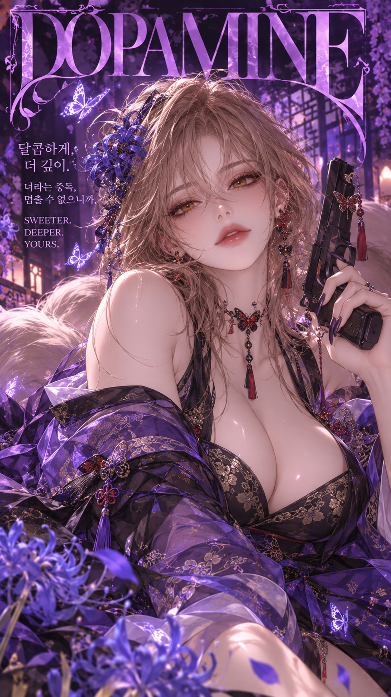
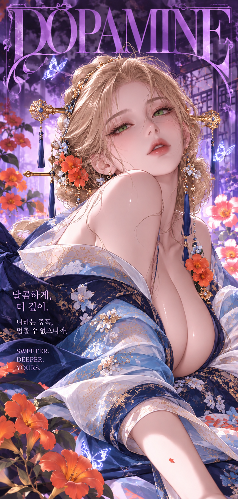
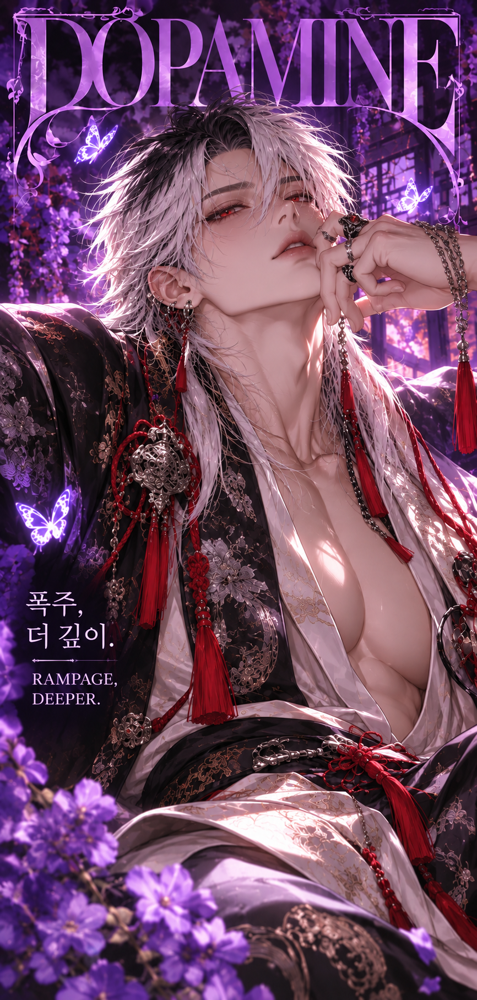
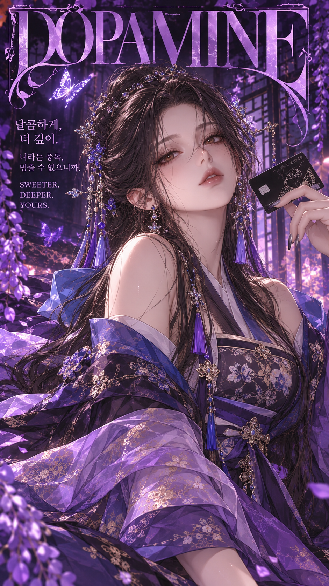

SUPPORTER 01
검하
총잡이 및 멘탈 지킴이
Stay in my dopamine, forever.
하나의 별을 중심으로 모인 우리.
코디악과 함께하는 순간, 우리의 도파민이 됩니다.
우리의 중심, 그리고 함께 만들어 가는 이야기

DOPAMIN은 코디악을 중심으로 모인 사람들의 팬덤 커뮤니티입니다. 서로의 개성과 마음을 존중하며, 일러스트와 이야기, 응원과 추억을 함께 쌓아갑니다.
보랏빛 밤과 나비의 반짝임처럼, 각자의 빛이 모여 하나의 특별한 세계가 되는 곳. 이곳에서 우리의 이야기를 이어가요.
코디악과 함께 팬덤을 만들어 가는 서포터즈를 소개합니다.




함께 응원하고, 기록하고, 오래도록 기억할 순간들.
DOPAMIN의 새로운 소식과 이벤트를 이곳에서 만나보세요.
커뮤니티 링크와 공지 기능은 추후 연결할 수 있습니다.